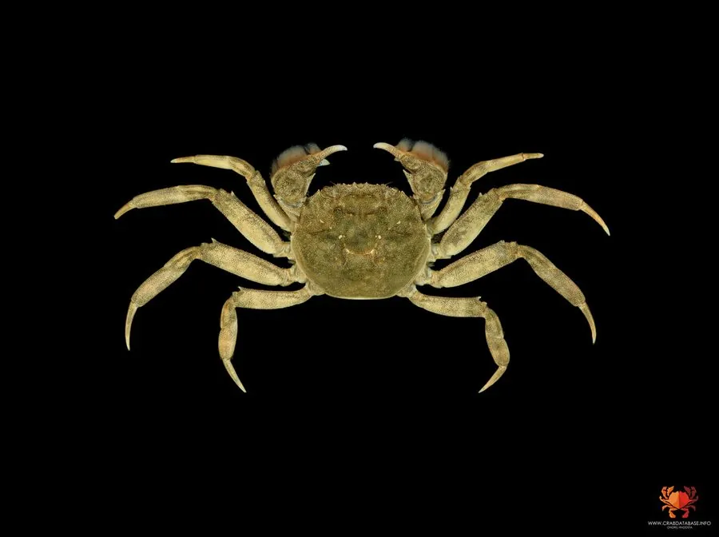

甲壳动物 · 动物界
中华绒螯蟹 Eriocheir sinensis

中国著名的淡水经济蟹，螯足密生绒毛，秋季顺河而下到河口繁殖，幼蟹再溯河生长，阳澄湖大闸蟹闻名中外。
- 分类
- 门节肢动物门纲软甲纲目十足目科弓蟹科属绒螯蟹属
- 栖息环境
- 淡水湖泊、河流与稻田，繁殖期需洄游到河口咸淡水水域
- 地理分布
- 中国长江流域及东部沿海，并已入侵欧洲多地
- 保护级别
- 暂无评估；在欧洲被列为入侵物种
物种志
中华绒螯蟹头胸甲近圆形，青灰色至墨绿色，成蟹甲宽约 5–8 cm。最显著的特征是第一对步足特化成的螯足，内外缘和掌部密生深褐色绒毛，中华绒螯蟹之名由此而来；末对步足扁平如桨，兼有游泳功能。雌蟹腹部圆形，雄蟹腹部三角形。
它平时生活在湖泊、河流和稻田中，秋季性成熟个体顺流而下，在长江口等咸淡水交汇处交配产卵。受精卵孵化出溞状幼体，经大眼幼体阶段后溯河进入淡水生长，一般约 2 年达到性成熟，寿命多不超过 3 年。中华绒螯蟹原产中国长江流域及东部沿海，是重要的淡水养殖蟹，阳澄湖、固城湖等产地的大闸蟹闻名；20 世纪初它随压舱水传入欧洲，在德国、英国等地掘洞破坏堤岸，被列为入侵物种。
形态与习性
- 食性杂食，吃水草、螺蚌、小鱼虾和腐肉
- 体型头胸甲宽约 5–8 cm，成蟹体重 100–250 g
- 生活史秋季降河繁殖，幼体经溞状幼体、大眼幼体阶段溯河生长
- 寿命一般约 2 年，少数可超过 3 年
- 经济价值中国重要的淡水养殖蟹，养殖产量巨大
- 入侵性随航运传入欧洲，掘洞破坏河岸与堤坝
趣味知识
- 大闸蟹的螯足长满绒毛，中华绒螯蟹的名称由此而来。
- 它们秋季要顺河而下，到长江口咸淡水交界处繁殖。
- 中华绒螯蟹在 20 世纪初随压舱水传入欧洲，成为入侵物种。